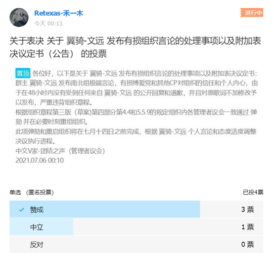
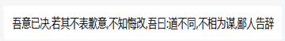

中文V家-团结之声 管理者议会告全体成员书
各位好，这里是中文V家-团结之声的管理者议会。
本周二，管理者议会表决通过了“关于 翼骑-文远 发布有损组织言论的处理事项以及附加议定书”决定对群主-翼骑 文远进行弹劾并同步重启组织，推选新的管理者和议会。
以下为事发经过的详细情况和证据：
翼骑-文远 在7月3日晚上23:15至23:50发布有关言论，并且对当晚要求的道歉请求置之不理，截止到6号上午9:30，我们依旧没有收到任何公开答复。
最终，7月5日晚，翼骑-文远发布了歌曲的初稿到B站个人账号上，在协调无果后，组织的管理者议会决定执行章程规定，弹劾并启动组织重启。
以下为管理者议会的投票结果：

共收到有效投票4张，中立投票者最后修改意见决定支持，以下为他的观点
至此，议案全票通过。
7月6日上午，组织的新群已经处于维护状态，预计会在晚间启动组织迁移，届时会自由解散原组织群。7月8日会强制解散所有原组织群内成员。
原组织群内成员可以自行决定去留，如果有疑问可以向@禾一木核实。
加入新组织群的成员请自行从原组织群退出，核实人数时未退出的将会强制退出原群。
新群将成为未来组织的唯一官方群，届时原组织架构和章程不变，人员不变（会新招募成员）。
由于此事给大家带来的不便和麻烦，管理者议会向大家表示歉意。
中文V家-团结之声 管理者议会 2021.07.06